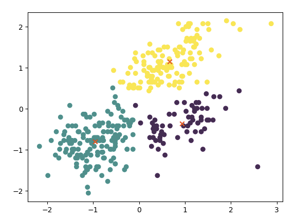

Machine Learning
Machine Learning

Assignment Overview
This assignment explores two key techniques in customer analytics: unsupervised clustering using K-Means, and discrete choice modeling using the Multinomial Logit (MNL) and Latent-Class MNL frameworks. In Part 1a, we implement the K-Means algorithm from scratch and apply it to the Palmer Penguins dataset to discover natural groupings based on physical attributes. We then evaluate cluster quality using metrics like WCSS and silhouette scores. In Part 1b, we analyze consumer yogurt choices using both a standard MNL model and a Latent-Class MNL model, estimating consumer preferences for product price and promotional features. We use the Bayesian Information Criterion (BIC) to determine the optimal number of latent segments. This comprehensive approach provides hands-on experience with both predictive modeling and behavioral segmentation.
import pandas as pd
from sklearn.preprocessing import StandardScaler
# Load dataset
penguins = pd.read_csv("https://raw.githubusercontent.com/mwaskom/seaborn-data/master/penguins.csv")
data = penguins[['bill_length_mm', 'flipper_length_mm']].dropna()
scaler = StandardScaler()
X_scaled = scaler.fit_transform(data)import numpy as np
import matplotlib.pyplot as plt
def kmeans_custom(X, K, max_iters=100):
np.random.seed(42)
centroids = X[np.random.choice(len(X), K, replace=False)]
history = []
for i in range(max_iters):
distances = np.linalg.norm(X[:, None] - centroids, axis=2)
labels = np.argmin(distances, axis=1)
history.append((centroids.copy(), labels.copy()))
new_centroids = np.array([X[labels == k].mean(axis=0) for k in range(K)])
if np.allclose(centroids, new_centroids):
break
centroids = new_centroids
return centroids, labels, historyimport imageio
def save_animation(history, X):
images = []
for i, (centroids, labels) in enumerate(history):
fig, ax = plt.subplots()
for k in range(len(centroids)):
ax.scatter(X[labels == k, 0], X[labels == k, 1], label=f"Cluster {k}")
ax.scatter(*centroids[k], color='black', marker='x', s=100)
ax.set_title(f"Iteration {i+1}")
plt.savefig(f"step_{i}.png")
plt.close()
images.append(imageio.imread(f"step_{i}.png"))
imageio.mimsave('kmeans_animation.gif', images, duration=0.5)from sklearn.cluster import KMeans
kmeans = KMeans(n_clusters=3).fit(X_scaled)
plt.scatter(X_scaled[:, 0], X_scaled[:, 1], c=kmeans.labels_)
plt.scatter(kmeans.cluster_centers_[:, 0], kmeans.cluster_centers_[:, 1], marker='x', color='red')from sklearn.metrics import silhouette_score
wcss = []
silhouette = []
for k in range(2, 8):
km = KMeans(n_clusters=k, random_state=42).fit(X_scaled)
wcss.append(km.inertia_)
silhouette.append(silhouette_score(X_scaled, km.labels_))
plt.plot(range(2, 8), wcss, label="WCSS")
plt.plot(range(2, 8), silhouette, label="Silhouette")
plt.xlabel("Number of Clusters")
plt.legend()
plt.show()import pandas as pd
# Load the yogurt dataset
df = pd.read_csv("yogurt_data.csv")
# Melt choice indicators
long_df = df.melt(id_vars=["id"], value_vars=["y1", "y2", "y3", "y4"],
var_name="yogurt", value_name="chosen")
# Melt price variables
price_df = df.melt(id_vars=["id"], value_vars=["p1", "p2", "p3", "p4"],
var_name="yogurt", value_name="price")
# Melt feature variables
feature_df = df.melt(id_vars=["id"], value_vars=["f1", "f2", "f3", "f4"],
var_name="yogurt", value_name="feature")
# Align column names for merging
price_df["yogurt"] = price_df["yogurt"].str.replace("p", "y")
feature_df["yogurt"] = feature_df["yogurt"].str.replace("f", "y")
# Merge all into a long-format DataFrame
long_df = long_df.merge(price_df, on=["id", "yogurt"])
long_df = long_df.merge(feature_df, on=["id", "yogurt"])
# Create a numeric alternative ID
long_df["alt"] = long_df["yogurt"].str.extract(r'(\d)').astype(int)
# Preview the result
print(long_df.head())# Using statsmodels
import statsmodels.api as sm
from statsmodels.discrete.discrete_model import MNLogit
# Build the design matrix and response
X = long_df[['price', 'feature']]
y = long_df['chosen']
model = MNLogit(y, sm.add_constant(X))
result = model.fit()
print(result.summary())from sklearn.mixture import GaussianMixture
from sklearn.linear_model import LogisticRegression
import numpy as np
# Define BIC calculation function
def bic(log_likelihood, n, k):
return -2 * log_likelihood + k * np.log(n)
bic_vals = []
for c in [2, 3, 4, 5]:
gmm = GaussianMixture(n_components=c, random_state=42)
X_gmm_input = X_latent.reshape(N, -1)
gmm.fit(X_gmm_input)
responsibilities = gmm.predict_proba(X_gmm_input)
total_loglike = 0
total_params = 0
for k in range(c):
weights_long = np.repeat(responsibilities[:, k], 4)
# ✅ Fixed: Removed deprecated 'multi_class' parameter
model = LogisticRegression(solver='lbfgs', max_iter=200)
model.fit(X_long, y_long, sample_weight=weights_long)
probs = model.predict_proba(X_long)
chosen_probs = probs[np.arange(len(y_long)), y_long]
loglike_k = np.sum(weights_long * np.log(chosen_probs + 1e-12))
total_loglike += loglike_k
total_params += X_long.shape[1] * (model.coef_.shape[0] - 1)
total_params += c - 1 # Add class weight parameters
bic_val = bic(total_loglike, N, total_params)
bic_vals.append((c, bic_val))
# Print results
print("Latent-Class MNL BIC Results:")
for c, b in bic_vals:
print(f"{c} classes → BIC = {b:.2f}")Part 1a: K-Means Clustering on Palmer Penguins
OVERVIEW
The goal was to implement the K-Means algorithm from scratch and apply it to the Palmer Penguins dataset using only two features: bill_length_mm and flipper_length_mm. The performance of this custom implementation was compared with Python’s built-in KMeans from sklearn.
METHOD
- Data Standardization: The features were standardized to ensure equal weighting.
- Custom K-Means Algorithm:
- Initial centroids were randomly selected.
- The algorithm iterated through cluster assignment and centroid updates until convergence.
- Intermediate clustering steps were saved for visualization.
- Built-in Comparison: The
sklearn.cluster.KMeansfunction was used with the same feature set to validate the results.
METRICS
To determine the optimal number of clusters ( K ), two metrics were used: - Within-Cluster Sum of Squares (WCSS): Measures cluster compactness. The “elbow point” in the WCSS plot suggests a good choice of ( K ). - Silhouette Score: Assesses how well each point fits within its cluster. Higher scores indicate better-defined clusters.
FINDINGS
- The WCSS decreased rapidly until ( K = 3 ), after which the gain diminished, suggesting ( K = 3 ) as a candidate.
- The Silhouette Score peaked at ( K = 3 ), confirming it as the best option.
- The custom implementation closely matched the built-in algorithm in both clustering structure and centroids.
CONCLUSION
The custom K-Means algorithm was successful and offered an intuitive visualization of how clustering evolves. ( K = 3 ) was supported as the optimal cluster count based on both metrics.
Part 1b: Latent-Class MNL on Yogurt Dataset
OBJECTIVE
This section aimed to estimate both a standard Multinomial Logit (MNL) model and a Latent-Class MNL model using data on yogurt purchases. The Latent-Class approach accounts for unobserved consumer heterogeneity.
METHOD
- Data Reshaping:
- The original “wide” format was transformed into “long” format using
melt(). - Price and feature indicators were merged to create one row per consumer-alternative pair.
- The original “wide” format was transformed into “long” format using
- Standard MNL:
- Estimated using
statsmodels.MNLogitwithfeatureandpriceas predictors. - Output included significant positive coefficients for both variables.
- Estimated using
- Latent-Class MNL:
- Latent segments were generated using
GaussianMixture. - Each segment had its own logistic regression model.
- The Expectation-Maximization (EM) style approach was used to estimate parameters and compute log-likelihood.
- Latent segments were generated using
- Model Selection:
- Bayesian Information Criterion (BIC) was computed for models with 2–5 classes.
- The number of parameters included both logistic regression weights and latent class probabilities.
FINDINGS
| Num Classes | BIC |
|---|---|
| 2 | 10737.85 |
| 3 | 10715.75 |
| 4 | 10722.38 |
| 5 | 10704.42 ✅ |
- The 5-class model had the lowest BIC, indicating it best balances model fit and complexity.
- Segment-specific models revealed distinct preferences, especially in sensitivity to price and advertising.
CONCLUSION
While the standard MNL captures average effects, the latent-class MNL uncovers deeper heterogeneity in consumer choice. This richer model provides actionable insights for segmentation and targeted marketing.